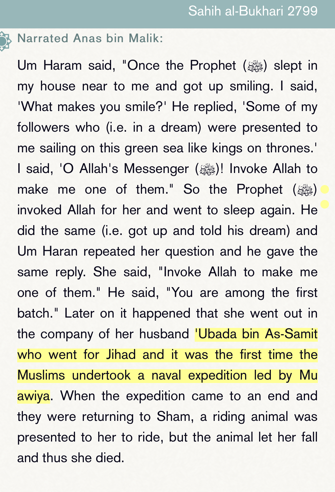
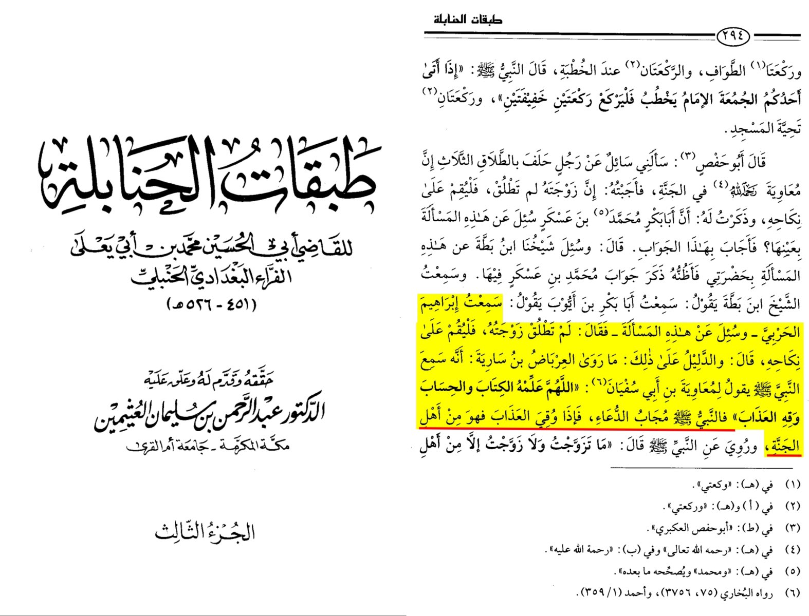
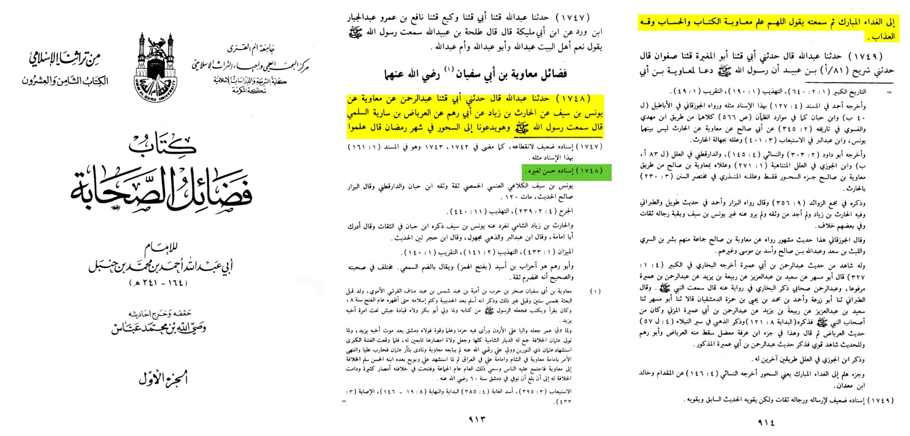

The prophet promised jannah to the first of the nation to do a naval expedition.

Ibn Hajr al-Asqalani said:
وقوله : قد أوجبوا ” أي فعلوا فعلا وجبت لهم به الجنة .
“The saying Paradise is granted to em….Paradise is WAJIB ON THEM”.
Source: [Fath al Bari]
Ibn Abdul Barr said:
” ﻭﻓﻴﻪ ﻓﻀﻞ ﻟﻤﻌﺎﻭﻳﺔ ﺭﺣﻤﻪ ﺍﻟﻠﻪ ﺇﺫ ﺟﻌﻞ ﻣﻦ ﻏﺰﺍ ﺗﺤﺖ ﺭﺍﻳﺘﻪ ﻣﻦ ﺍﻷﻭﻟﻴﻦ ﻭﺭﺅﻳﺎ ﺍﻷﻧﺒﻴﺎﺀ ﺻﻠﻮﺍﺕ ﺍﻟﻠﻪ ﻋﻠﻴﻬﻢ ﻭﺣﻲ “.
“There is a proof in this hadith, virtues of Muawiya May Allah have mercy on him”
Source: at Tamheed
"He the (Prophet saw) said to Muawiyah bin Abi Sufyan: “O Allah, teach him the Book and the Math,
and protect him from torment.” The Prophet answered the supplication, and if he was spared the torment,
he is one of the people of Jannah.

Prophet Peace be upon him said ” O Allah ! Teach Muawya Math, and protect him from the Punishment ”
